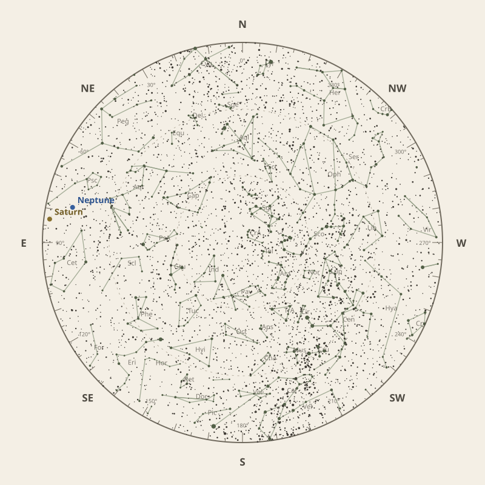

Monthly field almanac
August 2026
Observing reference for Southern Tasmania, Australia.


The month in one sentence · at a glance
Perseids peak on 12 Aug 2026 under 4% Moon, though the radiant stays low from this horizon.
- New Moon
- 13 Aug Darkest skies
- Full Moon
- 29 Aug Brightest skies
- Best dark window
- 10 Aug 12h 46m
Conditions now
Is the sky likely to cooperate?
Checking the sky near Southern Tasmania, Australia…
Find your bearings
The mid-month sky at 10 pm.
Face the matching compass direction and read outward from the centre toward the horizon.

Night planner
Plan the sky for your date.
Choose an observing date to see astronomical darkness, Moon interference, Galactic Centre visibility and the strongest planets.
Best low-Moon dark periods this month
- 5:54 pm–6:40 am12h 46m · 17% Moon
- 5:55 pm–6:39 am12h 44m · 10% Moon
- 5:56 pm–6:38 am12h 42m · 4% Moon
What deserves attention
Top picks for August.
- Milky Way
Milky Way core window
9h 00m with 76° altitude.
- Minor planets
Minor planet 3
55° altitude; magnitude 9.3.
- Planets
Neptune
Best monthly date at 47° altitude.
- Meteor showers
Perseids
Peak conditions: 4% Moon illumination; -14° altitude predawn.
- Planetary events
Mercury greatest western elongation
Morning sky; 19.5° from the Sun.


Moon and darkness
Read the lunar month.
Prefer minimum illumination for faint targets; bright lunar observing belongs near the fullest phase.
Complete lunar data →

Milky Way and deep sky
Recommended core sessions.
- 5:52 pm–2:52 am9h 00m · core to 76°
- 5:51 pm–2:51 am9h 00m · core to 76°
- 5:54 pm–2:44 am8h 50m · core to 76°


Planet visibility
Useful at twilight.
Evening
- Venus28 Aug · 6:00 pm39° · Good
Overnight
- Neptune29 Aug · 2:00 am47° · Excellent
- Saturn31 Aug · 2:30 am44° · Good
Predawn
- Uranus21 Aug · 6:30 am26° · Good
- Mars5 Aug · 7:00 am18° · Fair
- Mercury1 Aug · 7:00 am7° · Poor
- Jupiter26 Aug · 6:30 am4° · Poor
Other opportunities
Events worth noting.
- Minor planet 355° altitude; magnitude 9.3.
- PerseidsPeak conditions: 4% Moon illumination; -14° altitude predawn.
- Mercury greatest western elongationMorning sky; 19.5° from the Sun.


Data and downloads
Need every detail?
2 comet calculations are unavailable; they remain in the data library.
Occultation times use a smooth lunar limb; confirm grazing events with IOTA Occult 4.